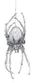

（PS：图在上一页）
瓦尔拉拉被称作是爬虫女王、墙中监视者和蠕虫守护者。据说你能在蟑螂的沙沙作响和蝗虫的窸窣中听到瓦尔拉拉的声音。在一些传说中，瓦尔拉拉制造能爬进耳朵并吞噬生物大脑的蠕虫，；而在另一些传说中，当蠕虫吞食一具尸体后，瓦尔拉拉能在其黄泉之巢（Deepest Hive）中重新制造出受害者。没有人知道瓦尔拉拉想要什么，但它的爪牙现在可能就在你的身边，在你的墙上爬行，在你的脚下移动。
甲壳意识Chitin Consciousness.瓦尔拉拉在各个方面都体现了昆虫的异界本质。瓦尔拉拉的共生体可能时由甲壳质构成，但它也可能是像魔咒脑洞spellburrow或投掷圣甲虫throwing scarab这样的造物——潜入宿主皮下的昆虫。被瓦尔拉拉所触碰过的人可能会经历身体上的腿边，并表现出昆虫的特征，但瓦尔拉拉的触碰也能够改变心灵。一些听到爬虫女王地狱的人会对昆虫产生痴迷，而另一些人可能会经历耿佳佳剧烈的变化。瓦尔拉拉最顽固的邪教会形成巢群来传播，一个生物会成为其女王，而其他被这个邪教徒所接触者会发现他们原本的个性与欲望开始消退，被巢群中实现共同目标的需求所代替。通常这样的影响是有限制的，只会在少数人之间建立心理上的联系。但在少数情况下，这种心理传染病是会具有致命性和传染性，能将整座城镇吞噬殆尽。
瓦尔拉拉的爪牙Valaara’s Minions.爬虫女王的邪教在第三章中有详细说明。瓦尔拉拉不使用嶙峋异变怪或狰狞异变怪；准确地说，它常常将类人生物变化为昆虫形态驱使。这些生物使用螳螂人、蛛化精灵或土巨怪的资料，但外貌有很大差距。一群瓦尔拉拉的奴仆可能是蟑螂人，而非通常螳螂人的半螳螂和人形的结合。在其他方面，它可能通过消耗蠕虫，产生凯沃斯衍体这样资料的生物。一般来说，瓦尔拉拉能够使用任何一种与昆虫和蠕虫有关系的生物，从简单的集群和巨蜘蛛到食腐虫、掘地怪、百足魔兽甚至紫虫。但这些怪物应当只是一个起点，像所有的异变魔一样，瓦尔拉拉不断地在试着创造新的事物。想象一下，一只具有邪恶智慧和灵能力量的紫虫，或能够在空间结构中挖掘的掘地虫。

像其他异变魔一样，瓦尔拉拉被束缚在凯博尔中的一处半位面内。然而，瓦尔拉拉已经培育出了能够啃穿现实结构的挖掘蠕虫，在她的黄泉之巢和头顶的世界之间掘出了一张通道网。发现这些隧道上层结构的组织能够利用它们快速再说世界中穿梭，进入拉扎尔联邦的一条隧道，在其中前进5英里后，就可能出现在索隆娜或埃鲁登原野。走私者和探险家可能会利用这一奇迹，但他们永远不会知晓隧道深处藏着什么——直到瓦尔拉拉的爪牙捉住了他们，或是他们被爬虫女王的心智影响所吞噬。虽然通往黄泉之巢的隧道可以出现在任何适合这一故事的地方，但它们不如艾伯伦和其他异变魔王国的联系那么永久。一条通往黄泉蜂巢的隧道可以出现在适合故事需要的地方，但它也可能坍塌并结束与那里的连接。
瓦尔拉拉王国的上部隧道通常由熔融玻璃状材料构成，然后随着探险者深入挖掘，他们会发现由甲壳质和肌肉构成的墙壁，每一个表面都有成群的昆虫。你可能会发现跳动的茧，沉睡紫虫的巢穴，或是排列着数千个发光的卵的房间。在最深处的巢穴里，瓦尔拉拉编织着自己的罗网，进行着邪恶的实验。
巢穴动作Lair Actions
在其巢穴中时，瓦尔拉拉可以召唤环境中的魔力来执行巢穴动作。在先攻轮到20时（出现等值时视为后手），瓦尔拉拉可以执行巢穴动作来造成以下效果项之一；它不能连续两回合使用相同的效果项：
• 瓦尔拉拉选择一个目标，并对其使用召聚虫群Summon Swarms能力。
• 瓦尔拉拉将生物纳入其蜂巢意识。它在巢穴中能看到的每一个生物必须成功通过一次DC22的感知豁免，否则被魅惑1分钟。当以这种方式被魅惑时，一个生物必须在其回合开始时在进行移动前使用其动作对另一个瓦尔拉拉选择的生物进行一次近战攻击。如果触及范围内没有生物，被魅惑的生物可以正常行动。被魅惑的生物每个回合结束时可以重复进行豁免检定，成功则结束自己身上的效应。
• 在瓦尔拉拉120尺范围内，半径50尺区域的地面会被恐惧飞蛾所包围，直到下一次先攻轮到20时。在此期间，每个在该区域内开始或结束回合的生物必须进行一次DC22的魅力豁免。豁免失败时，该生物免疫恐惧或者对抗恐慌豁免优势的能力都将失效，并且在1分钟内对恐慌的豁免具有劣势。
区域效应Regional Effect
通往黄泉之巢的隧道能够出现在任何地方。具有通往黄泉之巢隧道的区域能产生以下一种或多种扭曲：
• 昆虫和蜘蛛类生物数量剧增。在通道5英里内，昆虫表现出不正常的群聚行为。
• 生活在通道1英里内的生物可能会表现出物理的变化，进化出昆虫的特征，如复眼、额外肢体、甲壳质甲壳和蜂巢行为。
• 如果类人生物在通道1英里范围内待了至少1个小时，它必须成功通过一次DC22的感知豁免，否则陷入一种疯狂（见下文“瓦尔拉拉的疯狂”）。一个在这一豁免检定中你能够成功的生物在24小时内不会再受到这一区域效应的影响。
这些区域效应会随着时间推移而增强。如果一个通道刚刚出现，则可能会有轻微的昆虫活动增加，而疯狂的豁免DC可能会低得多。通道存在时间越长，效果就越显著。如果瓦尔拉拉死去或通道被摧毁，效应会在10天内消失。
如果生物因为瓦尔拉拉的巢穴效应或是目睹异变魔陷入疯狂，它会陷入一种永久性疯狂。根据瓦尔拉拉疯狂表格掷骰，以决定直到角色至于治愈为止因疯狂的性质获得的缺陷。
瓦尔拉拉的疯狂
|
d6 |
缺陷（持续直到治愈） |
|
1 |
“有虫子在我的肉里爬来爬去、” |
|
2 |
“我能从昆虫的蜂鸣中听到秘密。” |
|
3 |
“我正在经历一次腿边，变成美丽的昆虫形态。” |
|
4 |
“我与一个或多个人有精神上的联系。” |
|
5 |
“我必须为巢群服务，保护我的女王。” |
|
6 |
“我是一只进化成人形的昆虫。” |
中型异怪，中立邪恶
————————————————
AC：20（天生护甲）
HP：275（29d8+145）
速度 40尺，飞行40尺（悬浮）
————————————————
力量21（+5） 敏捷25（+7） 体质21（+5）
智力24（+7） 感知22（+6） 魅力25（+7）
————————————————
豁免：智力+14，感知+13，魅力+14
技能：奥秘+15，欺骗+14，自然+14，察觉+14
伤害抗性：非魔法攻击的钝击、挥砍、穿刺
伤害免疫：毒素，心灵
感官：120尺真实视觉，被动察觉23
语言：深潜语、心灵感应120尺
挑战等级：24（62000XP）
————————————————
异种心智Alien Mind。如果一个生物试图读取瓦尔拉拉的思想或对其造成心灵伤害，则该生物必须通过一次DC22的智力豁免检定，否则将被震慑1分钟。每当被震慑的生物结束自己的回合时，它都可以重骰豁免，成功则本效果对其自身的影响终止。
传奇抗性Legendary Resistance（3/日）。如果瓦尔拉拉在一次豁免中失败，它可以选择将其改为成功。
魔法抗性Magic Resistance。瓦尔拉拉为抵抗法术和其他魔法效应而进行的豁免检定具有优势。
再生Regeneration。瓦尔拉拉在它的回合开始时恢复20点生命值。如果瓦尔拉拉受到光耀伤害，则该特性在其下个回合开始时失效。只有当瓦尔拉拉以0点生命值开始其回合并且无法应用再生能力时才会死亡。
传送Teleport。以一个附赠动作，瓦尔拉拉可以传送到其30尺范围内任意一个它能看到且未被占据的空间。
动作Actions
多重攻击Multiattack。瓦尔拉拉以其甲壳利爪或甲壳蜇刺进行两次攻击，并使用一次召聚虫群。
甲壳利爪Chitinous Claw。近战武器攻击：命中+14，触及5尺，单一目标。命中：18（2d10+7）钝击伤害。
甲壳蜇刺Chitinous Spine。远程武器攻击：命中+14，射程60/180尺，单一目标。命中：17（3d6+7）钝击伤害。
召聚虫群Summon Swarms。瓦尔拉拉召唤出昆虫和蜘蛛的集群覆盖120尺内一点为源点住10尺半径的球状区域，对范围内的生物造成以下一种效应（投掷d6决定）。瓦尔拉拉免疫该效应。
1.叮咬蜂群Stinging Wasps。每个生物都必须进行一次DC22的体质豁免。豁免失败的生物受到32（5d12）穿刺伤害，且它的攻击检定获得劣势，直到其下个回合结束。豁免成功的生物受到一半伤害并不会获得劣势。
2.织网蜘蛛Spinning Spiders。每个生物都必须进行一次DC22的敏捷豁免。豁免失败的生物受到27（6d8）钝击伤害，且由于被蛛网粘住陷入束缚1分钟。一个被束缚的生物能够使用一个动作，通过一次成功的DC22的力量（运动）检定挣脱蛛网。
3.剧毒蜈蚣Venomous Centipedes。每个生物都必须进行一次DC22的体质豁免。豁免失败的生物受到22（4d10）毒素伤害并中毒1分钟。豁免成功的生物只受到一半伤害，但仍然中毒。
4.寄生蛆虫Infest Grubs。每个生物都必须成功通过一次DC22的敏捷豁免，否则被4（1d4+2）条蛆虫所寄生。在每个被感染的生物回合开始，其身上每有1只蛆虫，就会受到1d6穿刺伤害。在该生物下个回合开始前对其造成1点火焰伤害便能杀死这些蛆虫，结束效应。在此之后，这些蛆虫会因为深入皮肤而无法被烧掉。如果被蛆虫寄生的目标生命值结束回合时生命值为0，它将因为蛆虫钻入其心脏而死亡。任何治愈疾病的效应都将杀死所有寄生在目标身上的蛆虫。
5.不谐知了Discordant Cicadas。每个生物都必须成功通过一次DC22的感知豁免，否则陷入恐慌1分钟。当一个生物因此陷入恐慌时，它也会陷入失能。一个生物能够在每个回合结束时重骰豁免，成功则结束该效应。如果一个生物豁免成功或结束了该效应，它在接下来24小时内对该集群效应的豁免检定具有优势。
6.精神甲虫Psychoactive Beetles。每个生物都必须成功通过一次DC22的智力豁免，否则因为强烈的幻觉而受到33（6d10）心灵伤害。
传奇动作Legendary Actions
瓦尔拉拉拥有3传奇动作，用来选择执行下列动作项。瓦尔拉拉每次只可选择执行一个传奇动作项，且必须在另一生物回合结束时执行。瓦尔拉拉在其回合开始时恢复所有已消耗的传奇动作数。
发射蜇刺Throw Spine。瓦尔拉拉进行一次甲壳蜇刺攻击。
合成蠕虫Synthesize Worm（消耗2动作）。瓦尔拉拉指挥手下的集群进行融合，在1其选择的90 尺内一处未被占据的空间中形成一只 食腐虫Carrion Crawler（见《怪物图鉴》中条目）。食腐虫处于瓦尔拉拉的控制之下，在其回合后立即行动。
假象爬虫Imaginary Crawlers（消耗3动作）。瓦尔拉拉轻触凡人的心灵，向它们暗示她的生物已经在它们皮下挖洞。瓦尔拉拉选择的60尺内一个目标必须成功通过一次DC22的感知豁免，否则受到22（4d10）心灵伤害，并立即失去对一切法术的专注。